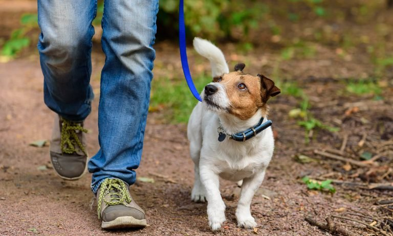
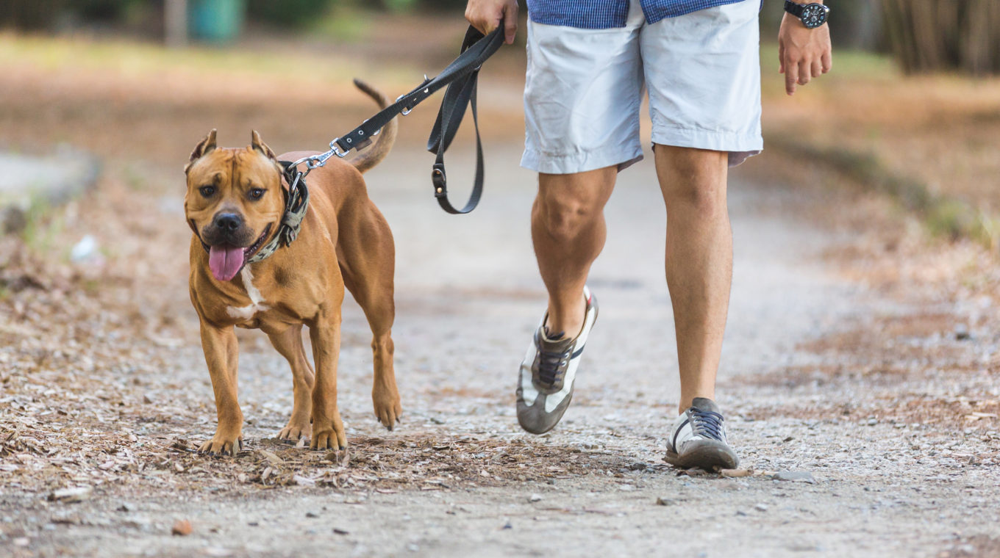

Dắt chó đi dạo
Thứ Sáu, 31/12/2021 - 17:23
Việc cho chó đi dạo thường xuyên vô cùng quan trọng. Là nền tảng cho một sức khỏe dồi dào, duy trì sức sống ở thú cưng của bạn.
Có người đã nói rằng: “Nếu bộ phận nào trên cơ thể không được vận động, chúng sẽ dần thoái hóa đi”.
Do đó, con người cũng như vật nuôi cần sự vận động, di chuyển để cơ thể trở nên chủ động, có nhiều năng lượng. Không bị ù lì, lười biếng và dần thoái hóa các cơ.
Như bạn cũng đã biết, một ngày chó nuôi trong nhà có thể ăn từ 2-3 bữa, lượng thức ăn chắc chắn lúc nào cũng đầy đủ các chất dinh dưỡng.
Chúng sinh ra rất nhiều năng lượng để cho chó hoạt động trong một ngày.

Tuy nhiên, nếu bạn không dắt chó đi dạo, năng lượng ấy sẽ dần tích lại trong cơ thể của chó dưới dạng mỡ thừa.
Nói cách khác, đây chính là nguyên nhân gây ra bệnh béo phì, mỡ trong máu ở chó rất phổ biến.
Ngoài ra, việc thụ động ở trong nhà quá lâu sẽ ảnh hưởng đến hệ thần kinh của chó.
Gây ra stress hoặc các bệnh tăng động cho bé bởi vì năng lượng cần được giải phóng ra bên ngoài.
Vì vậy bác sĩ thú y khuyên rằng bạn nên dắt chó đi dạo ít nhất là 2 ngày 1 lần để cho bé sức khỏe ổn định

Như bạn thấy đó, việc dắt chó đi dạo vô cùng quan trọng trong đời sống sinh hoạt của các bé.
Cách dắt cún cưng đi dạo đúng đắn sẽ giúp cún cưng ngoan ngoãn, biết nghe lời hơn rất nhiều.
Mỗi ngày bạn nên dành thời gian để dắt cún cưng đi dạo để bé có điều kiện phát triển toàn diện nhất về mặt thể chất và tinh thần.
Nếu như bạn chưa thể tìm được khoảng thời gian trống dành cho cún yêu. Một ngày của bạn đã quá bận rộn nhưng vẫn muốn cún cưng của mình được vui chơi.
Đừng ngần ngại chọn những nơi có dịch vụ dắt chó đi dạo uy tín, giá hợp lí như Enimal để chó có những giây phút hạnh phúc nhất nhé.